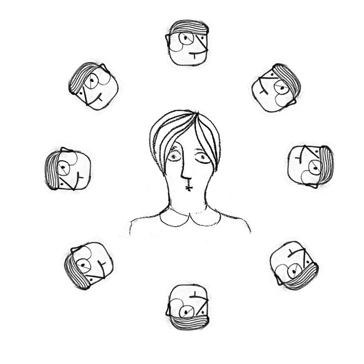

Anthropological study of the web worker tribe – consuming Licorize
Today we’ll explore the life of this curious creature: the web worker. Its home is the entire web, this polluted ocean of information, a true wilderness.
An international team of expert naturalist has been studying this species; after an expedition working closely with the natives, they defined a typical day of this species.
A day
This species is incredibly efficient in finding new sources of information, and consume it quickly. Millions of nanoseconds of innatural selection has produced this extraordinary creature.
See how they wake up in the morning, checking immediately their Twitter stream. Then they get to work, while sending and receiving tweets and listening to podcasts. The older specimens still use email, and can still write paragraphs longer than 140 characters. They are anyway deemed to extinction. As other naturalists pointed out, a likely evolution is towards 26 character messages.
At work, they keep getting and sharing information. Links are exchanged, pages visited, new ideas come and go, and most of this simply gets lost.
Getting home, the stream of information continues: using their mobiles, short and long messages are exchanged, podcast are heard. Again a stream of new ideas and things to be done and explored, potentially – but we’ll see that the destiny of these memes is simply to get lost.
In the evening information consumption of the web worker continues. On the couch with the iPad and its main course, Flipboard. Here too, ideas come, links are explored, feedback is given.
This kind of mammal seems so taken with information ingestion, that they do not eat concrete food very often.
Shh: now: look, they are falling asleep, recovering energy for another day of information madness.
Danger
The web worker has only one fear: internet connection outage, which leaves them stunned and confused. But as soon as any connection is available, they get back to their information consumption.
This species, while growing in numbers every day, is under threat. The danger of extinction does not come from the environment, but entirely from internal causes: it comes from psychic pressure. The amount of information coming in and unmanaged, the spectrum of different stimuli is too strong and uncontrolled: they begin losing their sense of self. Information consumption in large doses adds to psychic pressure.
Quoting a recent research from MIT: “By plotting the current trends, in just two years the amount of information will lead most of the web workers to extinction.”
A new plant
But recently a limited subset of individuals seems to be recovering. After detailed enquiries, the cause seems to be a change in diet, in particular intense consumption of a new plant, Licorize.
This plant species was born in Tuscany, but has been spreading quickly from California’s valleys, because of some foreign seeds grown by mistake. Let’s see a typical day of an individual from this privileged group.
[Map with moving arrows]
A day with Licorize
Browsing
The location from which most plant consumption is done is while browsing: instead of jumping frantically from one page to the next, and then to taking notes, changing and loosing focus all the time, these somewhat calmer specimens have a little tool integrated in the browser that allows them to write down the context of inspiration while not leaving the current work. Look what happens when they are on a page and click their magic tool: a temporary window opens above the page, where they can collect information.
Notice that specific information gets recorded here: instead of a list of uniform bookmarks, with no logic nor team, here they collect structured information directly from the source.
There are many other ways in which information gets collected, all seeded inside the typical behavior of the web worker: as she tweets, as she sends e-mail, as she browses from devices. Even when they take pictures, a compulsory repetitive activity of this species, both in male and female specimens, they can leave a trace in Licorize, effortlessly.
Requiring a minimal effort is very important, as this species is hyperactively searching for information, but terribly lazy when it comes time to organize it – just like 3-years old homo sapiens.
Chronology
When the web worker gets back to its Licorize’ nest, she finds a complete linear timeline of the randomly and incoherently collected information. And there further psychic pressure from the information coming in can finally be discharged, transforming bookmarks in to-do’s, ideas, goals, and more.
The ritual of the weekly review is performed by many, and those that don’t do it are considered “sinners”: social contact is to be avoided.
Projects
In a field study a group of social anthropologists has found that small groups of web workers, usually at most of seven individuals (there are strong taboos in these tribes against larger groups) suddenly started sharing their information meal and distributing weight among them; it seems that is a casual discovery a bit like the first capuchin monkey washing fruit.
These groups, that web workers call “teams”, transform information in action very efficiently.
Inside a team there seems to be no hierarchy, which some researchers say is a far consequence of IT being created by flower people of the 60’s.
Booklets
There are even occasional attempts of socialization with individuals of other species, using so-called “booklets”, where the collective work is presented a bit like in a performance art event.
Links / API
The Licorize plant is spreading among web workers, but also in web workers applications: you can integrate it in web applications [RSS], blogs, and even in clients. Up to now no negative side-effects of Licorize consumption have been found.
Back to top